Unit 3: Figure and availability#
Topics: Create a figure with Inkscape, annotation, figure legends, and image availability.
Motivation#
After processing the image, the final image figure needs to be created. We recommend doing this in a vector graphics program, such as Inkscape. This facilitates resizing of the image panel and adding labels.
Some journals even require that additional annotations are provided as vector graphics and not burned into the image.
Key considerations#
All important annotations present?
Are annotations legible?
Do annotations not obscure image information?
Figure legends document important information (e.g., dimension of scale bar)?
Learning objective#
Learners will be able to create a complete scientific image figure using vector graphics software, adding legible annotations, figure legends, and method descriptions that accurately document and communicate the underlying data and image processing.
Introduction#
In Unit 1: Visibility and Unit 2: Format and annotations we have processed an image panel to be included in an image figure.

Fig. 48 Processed overview and crop for one panel of an image figure.#
You can download the result of Unit 2: Format and annotations here: composite_scale.tif and composite_crop_scale.tif.
Typically, we want to present other image panels too, for instance, compare wild type versus a treatment. In this case, the first image is of U2-OS cells treated with DMSO as a control. In our example figure, we now want to compare U2-OS cells treated with Nocodazole acquired with the same settings.
{kind=link}
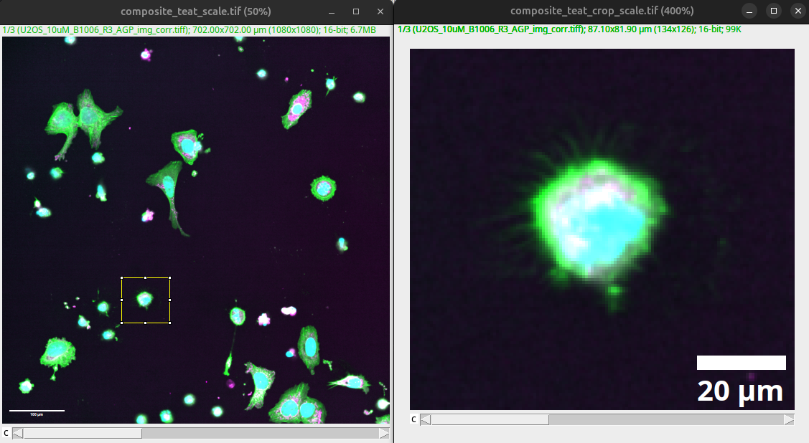
Fig. 49 Processed overview and crop for treatment panel of an image figure.#
Note
You can already see one of the challenges with annotations in processed images. Unless all settings are the same, the different annotations end up with different font sizes. We will show you how to overcome this issue by modifying and adding annotations in a vector graphics program.
You can download the original image for the treatment here: multichannel_image_treat.tif. Then perform the processing described in Unit 1: Visibility and Unit 2: Format and annotations.
Important
For an accurate qualitative comparison, the images need to be processed with the same settings, since differences introduced by the processing itself (e.g., a brighter contrast on the treated condition) would otherwise be indistinguishable from real biological differences.
You can download the result here: composite_treat_scale.tif and composite_treat_crop_scale.tif.
Figure setup#
Help > Update…
{kind=link}
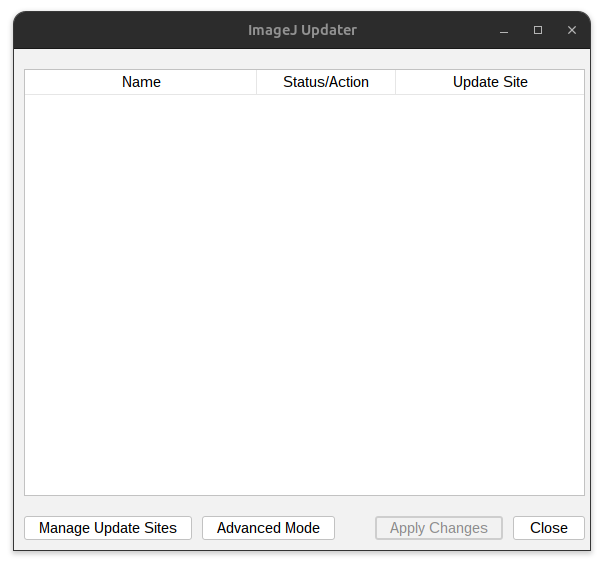
Fig. 50 Update Fiji.#
Press: Manage update site
Select Biovoxxel Figure tools
{kind=link}
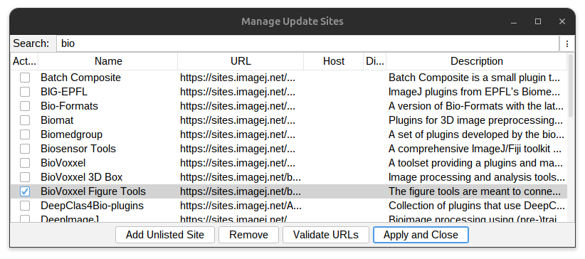
Fig. 51 Add Biovoxxel Figure Tool Box.#
Press: Apply and Close.
Restart Fiji and reopen all images for export. You can then export all the images as .svg files:
Plugins > BioVoxxel Figure Tools > Export all images as SVG
{kind=link}
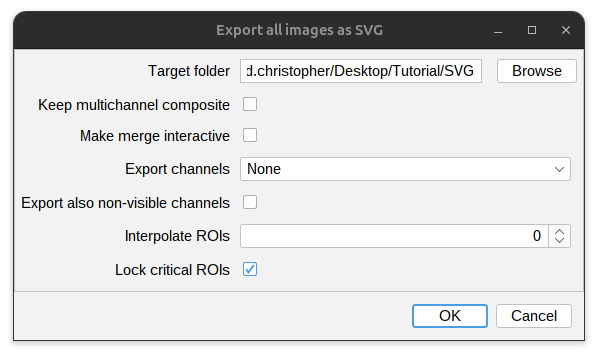
Fig. 52 Export images as SVG.#
You can download the examples here:
{kind=link}
{kind=link}
{kind=link}
{kind=link}
SVG is a vector graphic format that can be loaded and processed in Inkscape. We have prepared a figure template based on an A4 page that includes guides to leave page margins: figure_template.svg
{kind=link}
Open the template in Inkscape:
{kind=link}
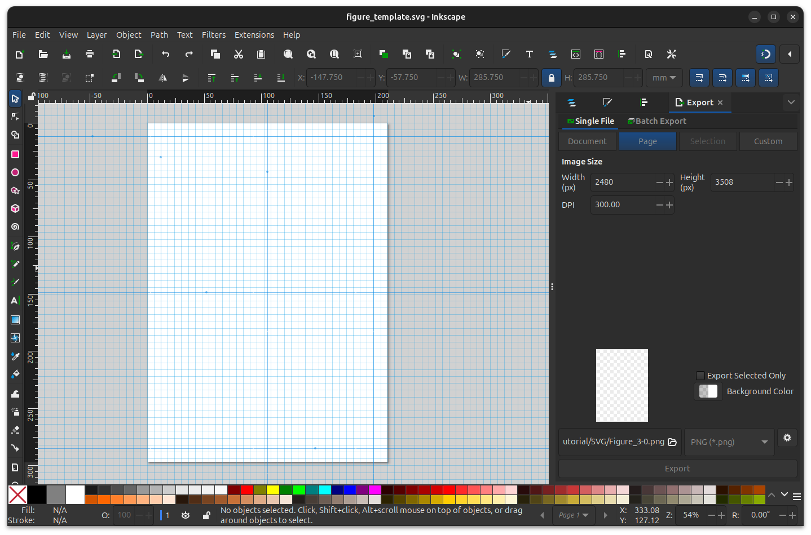
Fig. 53 Figure template in inkscape.#
Annotations#
We are now able to load the images exported as SVG into Inkscape. The advantage here is that the images, as well as the included annotations, are full vector graphics. Annotations such as scale bars can be edited, and the images can be resized without interpolation.
Drag and drop SVG files into inkscape.
File > Import…
{kind=link}
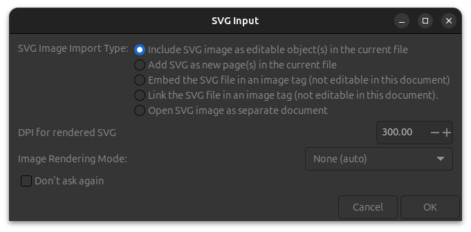
Fig. 54 Import SVG images into inkscape.#
Important
Import images at 300 dpi, as this is the required printing resolution of most journals.
The first step is to resize the image to fit the image figure. When resizing make sure to lock the aspect ratio and resize the image uniformly. After import the annotations can be edited.
{kind=link}
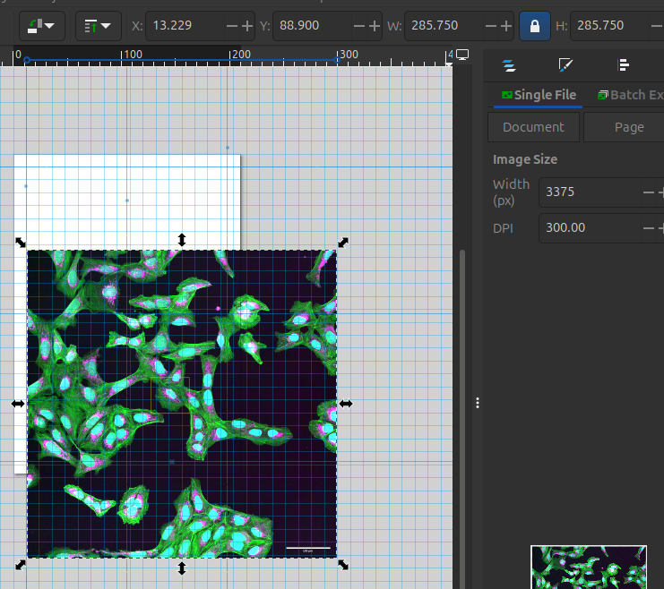
Fig. 55 Resize image panel to fit the figure. Note: the lock on the aspect ration to resize the image uniformly.#
Next you can select annotation in Layers and Objects. Unlock the annotation if locked to modify them. Modify the size and location of the annotation.
Layer > Layers and Objects…
{kind=link}
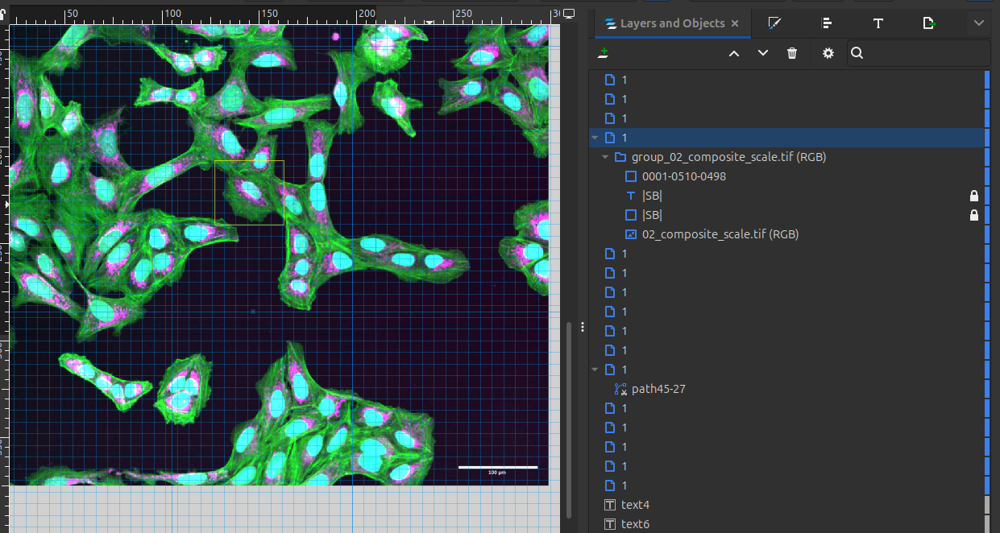
Fig. 56 Layers and objects allow to select the different annotations.#
Important
Ensure that the annotations are legible. Make sure the annotations do not obscure any data.
{kind=link}
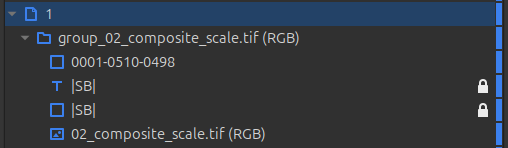
Fig. 57 The ROI - 0001-0510-0498, the scale bar and scale bar text - |SB|, and the image - 02_composite_scale.tif (RGB) is shown. Note: the scale bars are locked.#
Select the annotation you want to modify in the layers and objects interface. Then edit height and location of scale bar. Edit the dimension annotation such that it is uniform and legible across all images.
{kind=link}
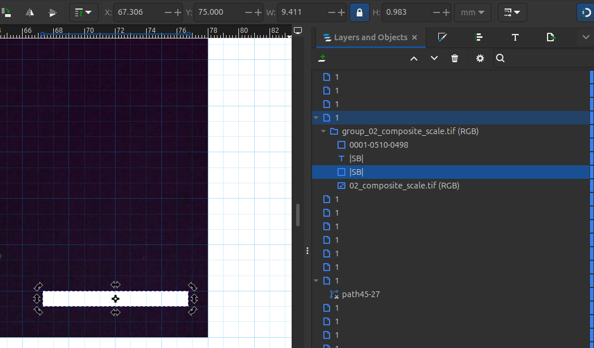
Fig. 58 Scale bar adjusted for height and location. The dimension will be specified in the figure legends.#
Tip
To make annotations simpler in the image, one can specify the physical dimension that the scale bar represents also in the figure legends. To easily retrieve this information one can drag the scale bar text outside the canvas.
If different image panels have the same scale bar, you can put the scale bar in the first image. Critical is that images of different dimensions (e.g., overview and enlarged) show the correct scale.
{kind=link}
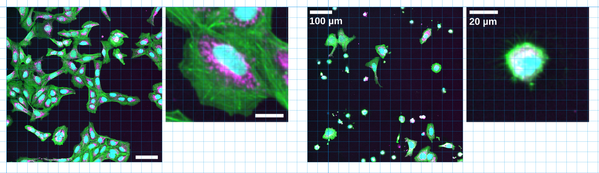
Fig. 59 Different examples of annotated scale.#
In Inkscape (or any other vector graphics tool), we can then add other annotations. We recommend adding all important annotations that are needed to easily interpret the image figures directly in the image figure. Specifically for multichannel images, an explanation of the colors should be provided. Also, the location of the inset or an enlarged crop should be marked in the overview. Select the ROI in the layers panel:
{kind=link}
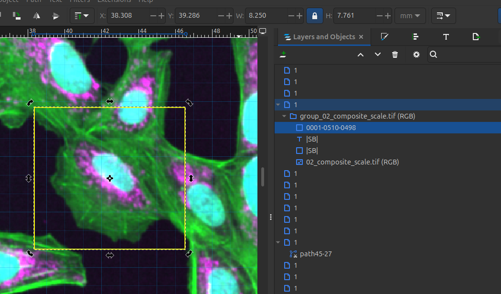
Fig. 60 The ROI when added as an overlay can also be exported in the SVG and imported in inkscape. You can then modify the color and thickness of the ROI.#
The appearance of the ROI can then be modified via:” Object > Fill and Stroke…
For changing the color select the Stroke tab. In the Fill and Stroke interface select the “Stroke Paint” tab.
{kind=link}
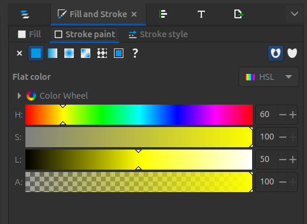
Fig. 61 In the Fill and Stroke interface select the “Stroke Paint” tab.#
Modify the color of the ROI. Via the color settings in the Stroke paint panel.
Note
Chose the color of the annotation such that there is good contrast with the image content. In a grayscale image you can use a color (e.g. yellow, magenta green). In a color image use a color that is not present in one of the channels (in this example, white or yellow work well).
{kind=link}
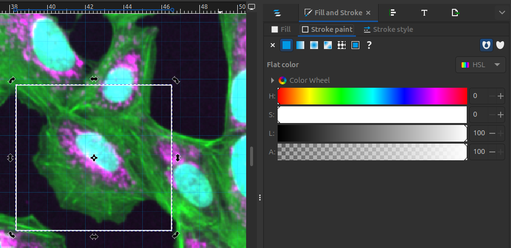
Fig. 62 Adjust the color of the ROI.#
After the color has been adjusted, modify the line width of the ROI. Select the Stroke style tab in the Fill and Stroke interface, then adjust the Width setting:”
{kind=link}
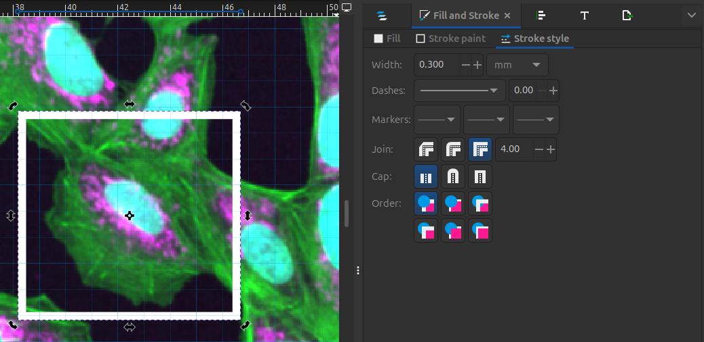
Fig. 63 Adjust the width of the ROI lines so that the ROI is clearly visible.#
Consider adding annotations, such as cell type and treatment, to help the viewer interpret your results more quickly. You can also use arrows or other symbols to highlight specific areas of interest within the data.
{kind=link}
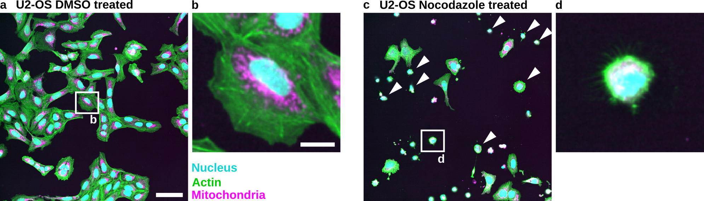
Fig. 64 Example of possible annotations in an image.#
You can download the result here: figure_example.svg
{kind=link}
Figure legends#
The figure legends provide further details to explain what the viewer is seeing. They should be focused on the result and provide further critical information to interpret the image, e.g., the dimensions of the scale bar or the use of other annotations.
See below a proposal for an image figure legend:
Fig. 65 Nocodazole treatment results in the appearance of small rounded cells in U2-OS cells: (a) U2-OS cells treated with DMSO only. (b) Cropped image of a single cell treated with DMSO. (c) U2-OS cells treated with Nocodazole at a 5 µM concentration over 24h show appearance of small rounded cells (White Arrowheads). (d) Cropped image of a small rounded cells. Scale bar represents 100 µm (a) and 20 µm (b).#
Important
Basic image processing — e.g., linear adjustments such as brightness/contrast settings — should generally be explained in the methods.
Advanced or non-linear methods such as gamma adjustment, median filter, deconvolution, or deep-learning-based image restoration (e.g., Noise2Void) are not readily obvious to the viewer and should additionally be specified in the figure legend, so the reader knows the displayed image has been transformed beyond simple intensity rescaling.
Methods#
The methods should explain the key processing that was applied to the image figures. They should also name and cite the image processing platform — including the version used — as well as any plugins.
For Fiji, the version can be seen in the taskbar:
{kind=link}
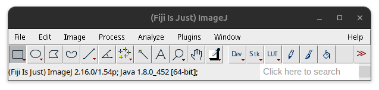
Fig. 66 Fiji Version in the taskbar.#
Based on this a possible methods section could read:
Image figures were processed using Fiji Is Just ImageJ (Fiji) (Schindelin et al. 2012) version 2.16/1.54p and the BioVoxxel Figure Toolbox (Brocher and Mutterer 2026). Following figure publication guidelines (Schmied et al. 2024), images were adjusted for brightness/contrast using the same min and max settings across compared channels.
Used brightness and contrast settings:
Channel |
Channel Label |
Min |
Max |
|---|---|---|---|
1 |
Mitochondria |
308 |
2484 |
2 |
Actin |
84 |
2965 |
3 |
Nucleus |
36 |
1270 |
Citations:
Schindelin, J., Arganda-Carreras, I., Frise, E. et al. Fiji: an open-source platform for biological-image analysis. Nat Methods 9, 676–682 (2012). https://doi.org/10.1038/nmeth.2019
Jan Brocher, & mutterer. (2026). biovoxxel/BioVoxxel-Figure-Tools: BioVoxxel Figure Tools - 4.4.1 (bvft-4.4.1). Zenodo. https://doi.org/10.5281/zenodo.18656531
Schmied, C., Nelson, M.S., Avilov, S. et al. Community-developed checklists for publishing images and image analyses. Nat Methods 21, 170–181 (2024). https://doi.org/10.1038/s41592-023-01987-9
Tip
To make your work easier, you can add the macro that we created in Unit 1: Visibility together with your original and processed images as documentation instead of specifying the brightness contrast settings.
Availability#

Fig. 67 Examples of different repositories. Overview provided by Cimini 2023.#
As long as it is legally and technically feasible, the original images as well as the final processed images should be made available in public repositories. The original images should be provided losslessly compressed, along with any ground truth or manual annotations.